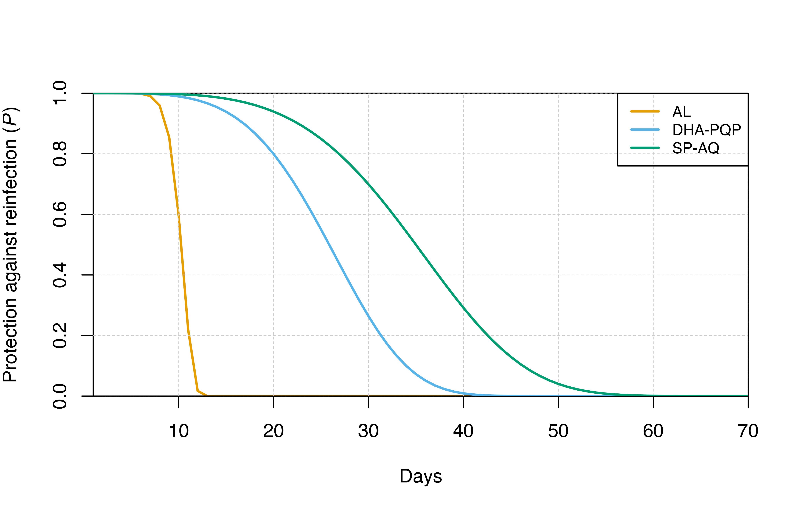

Treatment
Treatment.Rmd
# Load the requisite packages:
library(malariasimulation)
# Set colour palette:
cols <- c("#E69F00", "#56B4E9", "#009E73", "#F0E442", "#0072B2", "#D55E00", "#CC79A7")This vignette describes how to implement clinical drug treatments in malariasimulation.
The malariasimulation package contains built-in parameters sets for three anti-malarial drugs:
-
AL_params: artemether-lumefantrine (AL) -
DHA_PQP_params: dihydroartemisinin and piperaquine (DHA-PQP) -
SP_AQ_params: sulfadoxine-pyrimethamine and amodiaquine (SP-AQ)
While all these drugs can be used to treat malaria, DHA-PQP and SP-AQ
remain in the body for some time following treatment, making them good
candidates for chemoprevention in mass drug administrations (see Mass
Drug Administration and Chemoprevention). Any of these drugs can be
included in the parameter list using the set_drugs()
function (see drugs_parameters.R
for full parameter details).
Each drug parameter set is a vector of length four, with parameters that represent the drug efficacy, the infectiousness following treatment relative to an untreated infection, and parameters that determine the protection against reinfection (): shape () and scale (). The decay of protection against infection follows a weibull distribution as follows:
The for each drug following treatment through time is plotted below.
calc_P <- function(w, lambda, t){
P <- exp(-(t/lambda)^w)
}
t <- 1:70
P_matrix <- lapply(list(AL_params, DHA_PQP_params, SP_AQ_params), function(x){
calc_P(w = x[3], lambda = x[4], t = t)
})
plot(x = t, y = P_matrix[[1]], type = "l", col = cols[1],
xlab = "Days", ylab = expression(paste("Protection against reinfection (",italic(P),")")),
xaxs = "i", yaxs = "i", lwd = 2)
grid(lty = 2, col = "grey80", lwd = 0.5)
#
invisible(sapply(2:3, function(x){
points(x = t, y = P_matrix[[x]], type = "l", col = cols[x], lwd = 2)
}))
# Add legend
legend("topright", legend = c("AL","DHA-PQP","SP-AQ"), col = cols, lty = 1, lwd = 2, cex = 0.8)
For more details, please see:
Okell, L., Cairns, M., Griffin, J. et al. Contrasting benefits of different artemisinin combination therapies as first-line malaria treatments using model-based cost-effectiveness analysis. Nat Commun 5, 5606 (2014). https://doi.org/10.1038/ncomms6606.
Setting drugs and clinical treatment
Drug parameters can be incorporated into a complete parameter set
using the set_drugs() function which takes the full
parameter set and a list of drug parameter sets.
A treatment regimen for each drug can then be described using the
set_clinical_treatment() function which takes the drug
index, a vector of timesteps at which a change in coverage occurs (where
the initial coverage is 0 until the first timestep specified) and a
vector of coverages for the drug that correspond with the timestep
changes, as well as the complete parameter set.
Multiple drugs can be modelled simultaneously, with treatment
coverage that can be specified for each drug. This function must be used
for each drug included (e.g., if there are two drugs,
set_clinical_treatment() must be called twice to specify
the treatment plan).
Parameterisation and simulation
We will run a simulation for two years using AL and DHA-PQP treatment regimens. We begin our AL and DHA-PQP treatments on day 300 at 40% and 30% coverage, respectively. We provide these treatments for 300 days before the regimen ends. Note that the sum of treatment coverages cannot exceed 100% at any timestep.
Prior to the simulation, the function set_equilibrium
can also be used to generate equilibrium values for the human and
mosquito populations.
# Daily simulation timesteps for two years
year <- 365
sim_length <- 2 * year
# With a population size of 1000
human_population <- 1000
# Set human population size
simparams <- get_parameters(overrides = list(human_population = human_population))
# Update parameter set with chosen drug-specific parameters (AL and DHA/PQP)
drug_params <- set_drugs(simparams, list(AL_params, DHA_PQP_params))
# Choose initial EIR to 10
starting_EIR <- 10
# Set treatment program for AL (drug index = 1)
treatment_params <- set_clinical_treatment(
parameters = drug_params,
drug = 1,
timesteps = c(300,600), # Treatment coverage changes on day 300 and day 600
coverages = c(0.4,0)) # The initial treatment coverage (0%) is the default
# and does not need to be set
# Set treatment program for DHA-PQP (drug index = 2)
treatment_params <- set_clinical_treatment(
parameters = treatment_params,
drug = 2,
timesteps = c(300,600),
coverages = c(0.3,0))
# Use set_equilibrium to update the parameter set for a given initial EIR
treatment_params <- set_equilibrium(treatment_params, starting_EIR)
# Run simulation:
output <- run_simulation(sim_length, treatment_params)Visualisation
Following simulation of malaria transmission under this treatment
regimen, we can now visualise the effect of the regimen on the number of
detectable cases through time using the
n_detect_lm_730_3650.
# Plot results
plot(x = output$timestep, y = output$n_detect_lm_730_3650, type = "l",
xlab = "Days", ylab = "Detectable cases", col = cols[1],
ylim = c(min(output$n_detect_lm_730_3650)-1, max(output$n_detect_lm_730_3650)+7),
xaxs = "i", yaxs = "i")
# Show treatment times
abline(v = 300, lty = 2)
text(x = 310, y = max(output$n_detect_lm_730_3650), labels = "Treatment\nbegins", adj = 0, cex = 0.8)
abline(v = 600, lty = 2)
text(x = 610, y = max(output$n_detect_lm_730_3650), labels = "Treatment\nends", adj = 0, cex = 0.8)
# Add grid lines
grid(lty = 2, col = "grey80", nx = 11, ny = 10, lwd = 0.5)